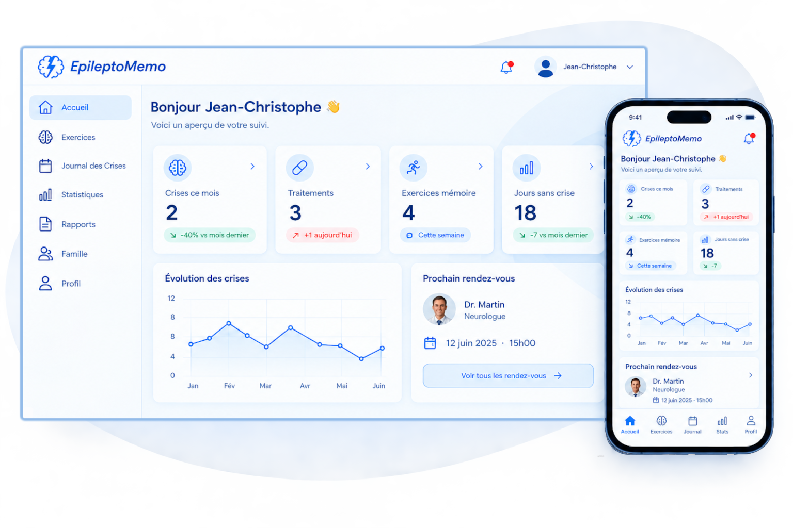

Comprendre
Suivez l’évolution de vos crises et de vos symptômes.
EpileptoMemo est un espace pensé pour vous aider à suivre votre quotidien, comprendre votre évolution et mieux échanger avec votre neurologue.

EpileptoMemo rassemble au même endroit les informations importantes de votre quotidien pour vous aider à mieux suivre votre épilepsie.
Suivez l’évolution de vos crises et de vos symptômes.
Gardez vos informations importantes au même endroit.
Préparez plus facilement vos échanges avec votre neurologue.
Un espace personnel pour suivre vos crises, vos traitements et votre évolution au quotidien.
Un espace professionnel pour retrouver les informations que vos patients choisissent de partager avec vous.
Les comptes professionnels font l’objet d’une vérification manuelle.


Fatigue, mémoire, traitements, rendez-vous, symptômes, évolution… Vivre avec l’épilepsie, c’est aussi gérer tout ce qui l’entoure.
EpileptoMemo a été imaginé pour réunir ces informations dans un espace simple, accessible et pensé pour le quotidien.
Créez votre espace EpileptoMemo et commencez à suivre votre quotidien.
Vous avez déjà un compte ?